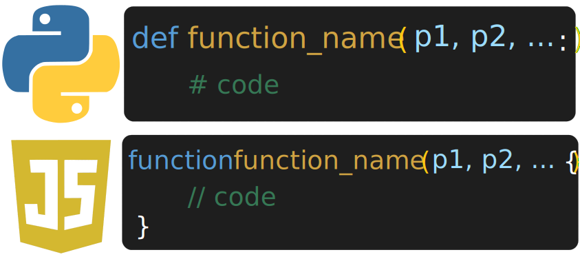

¿POR QUÉ 'def' EN PYTHON Y NO 'function' COMO EN JAVASCRIPT?
Si estás familiarizado con JavaScript, es probable que hayas utilizado la palabra clave "function" para definir funciones. Sin embargo, en Python, la palabra clave que se utiliza para definir funciones es "def". ¿Por qué se eligió "def" en lugar de "function"? En este artículo, exploraremos la historia detrás de esta elección y las razones por las que "def" se ha convertido en la palabra clave estándar para definir funciones en Python.
Para empezar, es importante destacar que Python fue creado en los años 90 por Guido van Rossum. En ese momento, Guido estaba trabajando en un proyecto llamado ABC, un lenguaje de programación que tenía como objetivo ser fácil de aprender y leer. En cierto modo, Python fue una evolución de ABC, con la diferencia de que estaba diseñado para ser un lenguaje de programación de propósito general.
Cuando se trata de definir funciones en Python, Guido eligió la palabra clave "def" porque es corta, fácil de recordar y coherente con otras palabras clave en Python, como "if", "for" y "while". Además, "def" es una abreviatura de "define", lo que hace que sea fácil de entender lo que está sucediendo en el código.
Otra razón por la que "def" se convirtió en la palabra clave estándar para definir funciones en Python es debido a la sintaxis del lenguaje. En Python, la definición de una función siempre comienza con la palabra clave "def", seguida del nombre de la función, los parámetros de entrada entre paréntesis y un dos puntos. Luego, el cuerpo de la función se indenta debajo de la definición. Esta sintaxis hace que sea fácil de leer y entender el código de la función en Python.
En resumen, la elección de "def" como palabra clave para definir funciones en Python se debió en gran medida a las decisiones de diseño de Guido van Rossum. "Def" es una palabra corta y fácil de recordar que se ajusta a la sintaxis y la filosofía del lenguaje. Aunque puede ser diferente a lo que estás acostumbrado en otros lenguajes de programación, una vez que te acostumbras a la sintaxis de Python, encontrarás que "def" es una forma clara y sencilla de definir funciones.
Geovanni Gonzales
Sistemas, Apasionado por la tecnología Blockchain y seguridad Informática.